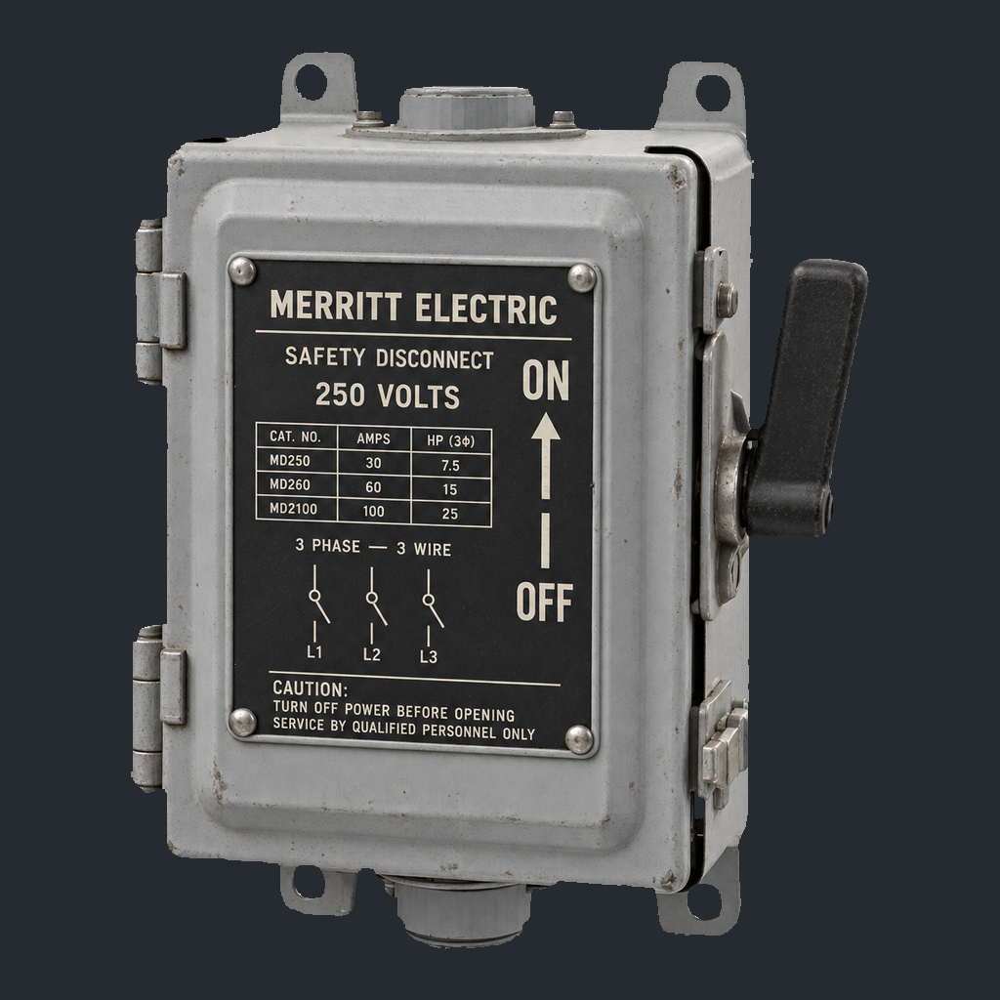
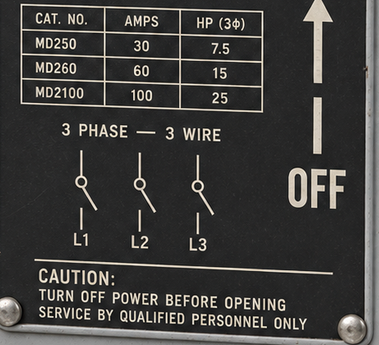
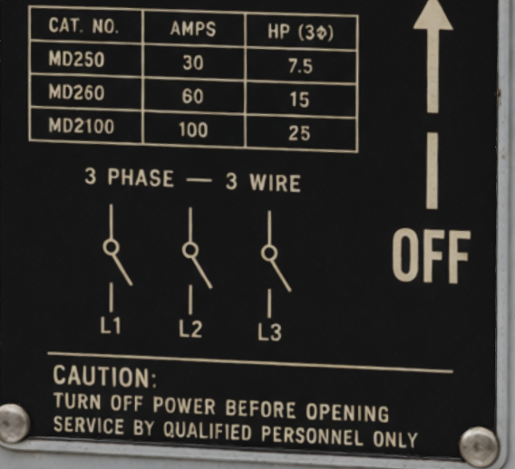
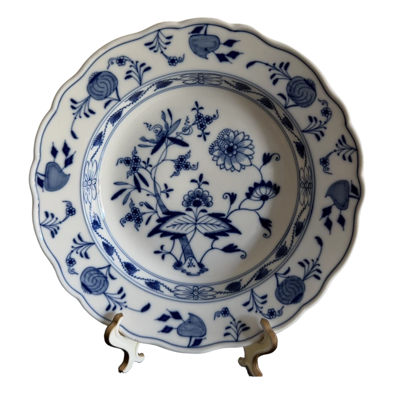

01ESTIMATE
Separate material from light.
Use 2D generative priors to estimate albedo, metallic and roughness maps from the reference image.
Built entirely on
open-source data.Let the image take flight.
Trained entirely on open-source data.Compare alignment and fine detail in 3D.
Loading 3D…
Loading 3D…
Preferred for visual quality in our five comparisons.
Explore a 3D scene built from one image, with simulated robot interaction and relighting.
Compare lettering, symbols and fine markings.



One reference image · matched camera · different lighting.
Explore seven models under changing light.
Inspect their albedo, roughness and metallic maps.
One reference image · provided geometry · PBR materials
These demonstrations are separate from the benchmark evaluations. The aircraft includes locally refined albedo and image-aligned postprocessing. In the interactive commercial comparisons, SUPRA-Tex uses one reference image for the aircraft and adds a synthesized back view for the other six cases; commercial systems use the reference image only. The seven material examples use one reference image and provided geometry.
Choose a back-view design, then inspect the corresponding result from three angles.

The front reference and geometry stay fixed.
Synthesized back-view designs reprojected onto the supplied meshes as albedo.
07 / SELECTED RESULTS · 14 CASES
Compare each result with its reference.
Rotate the model to inspect the full surface.
Estimate materials from the reference, align them to the mesh, then complete the texture in 3D.
Use 2D generative priors to estimate albedo, metallic and roughness maps from the reference image.
Project reliable observations onto the mesh, then encode them in the generator's native material latent space.
An interleaved flow transformer alternates unobserved-region and full-surface updates, guided by fixed observation memory.
More views. More control. Use additional views or edited images without retraining the 3D generator.
SUPRA-Tex achieves lower perceptual error than Pixal3D* on both benchmarks, with geometry held fixed within each comparison.
Compared on the same mesh Pixal3D* SUPRA-Tex
LPIPS measures perceptual error · lower is betterOne image. The same ground-truth mesh.
16 matched views · SUPRA-Tex‡ (Qwen-Image-2.1).
Closer agreement on object pixels.
Foreground PSNR ↑One image. A shared predicted mesh.
End-to-end LPIPS evaluated across 4 views.
Controlled comparison.
The shared mesh isolates differences in texture generation.
* Pixal3D is the open-source TRELLIS.2-based variant used in this study. Given-geometry highlights use SUPRA-Tex‡ with Qwen-Image-2.1 for 2D material estimation.
Each method textures the ground-truth mesh from one reference image. Scores average the reference view and 15 novel views under matched lighting and cameras. The reference camera is supplied where the method interface supports it.
Each cell: DTC-Tex / Complex-Tex. PSNR is in dB. ↑ Higher is better; ↓ lower is better. — No PBR output. ‡ Qwen-Image-2.1 material estimation.
| Method | PSNR ↑ | Foreground PSNR ↑ | SSIM ↑ | LPIPS ↓ | CLIP-I ↑ | FDDINOv3 ↓ | Albedo PSNR ↑ | Albedo foreground PSNR ↑ | Albedo SSIM ↑ | Albedo LPIPS ↓ | Metallic MAE ↓ | Roughness MAE ↓ |
|---|---|---|---|---|---|---|---|---|---|---|---|---|
| Step1X-3D | 23.12 / 23.61 | 14.21 / 13.97 | 0.914 / 0.924 | 0.083 / 0.066 | 0.851 / 0.848 | 33.30 / 30.93 | — / — | — / — | — / — | — / — | — / — | — / — |
| MV-Adapter | 24.64 / 24.59 | 15.73 / 14.95 | 0.917 / 0.926 | 0.077 / 0.064 | 0.858 / 0.849 | 33.17 / 31.19 | — / — | — / — | — / — | — / — | — / — | — / — |
| Ink3D | 25.82 / 26.15 | 17.08 / 16.69 | 0.921 / 0.935 | 0.076 / 0.060 | 0.859 / 0.864 | 35.01 / 30.86 | — / — | — / — | — / — | — / — | — / — | — / — |
| UniTEX | 25.42 / 25.78 | 16.54 / 16.19 | 0.925 / 0.940 | 0.071 / 0.056 | 0.877 / 0.872 | 29.24 / 27.42 | — / — | — / — | — / — | — / — | — / — | — / — |
| MVPainter | 26.44 / 25.72 | 17.59 / 16.19 | 0.924 / 0.933 | 0.077 / 0.067 | 0.856 / 0.846 | 33.40 / 33.87 | 24.17 / 23.05 | 15.30 / 13.51 | 0.911 / 0.922 | 0.089 / 0.079 | 0.121 / 0.228 | 0.119 / 0.188 |
| TEXGen | 27.24 / 27.90 | 18.33 / 18.25 | 0.932 / 0.945 | 0.072 / 0.053 | 0.848 / 0.871 | 51.11 / 32.89 | — / — | — / — | — / — | — / — | — / — | — / — |
| LumiTex | 28.29 / 27.77 | 19.38 / 18.21 | 0.939 / 0.947 | 0.062 / 0.051 | 0.892 / 0.887 | 24.42 / 23.29 | 26.30 / 25.26 | 17.39 / 15.68 | 0.928 / 0.938 | 0.069 / 0.060 | 0.352 / 0.256 | 0.098 / 0.181 |
| Hunyuan3D 2.1 | 26.80 / 25.83 | 17.89 / 16.19 | 0.926 / 0.931 | 0.070 / 0.063 | 0.877 / 0.857 | 28.18 / 31.05 | 24.00 / 22.89 | 15.09 / 13.25 | 0.910 / 0.918 | 0.079 / 0.074 | 0.142 / 0.247 | 0.079 / 0.156 |
| TRELLIS.2 | 28.60 / 27.97 | 19.73 / 18.41 | 0.935 / 0.945 | 0.062 / 0.051 | 0.880 / 0.876 | 32.73 / 27.42 | 25.78 / 25.77 | 16.90 / 16.17 | 0.921 / 0.935 | 0.070 / 0.058 | 0.063 / 0.131 | 0.059 / 0.111 |
| Pixal3D* | 29.19 / 28.84 | 20.47 / 19.44 | 0.950 / 0.950 | 0.050 / 0.046 | 0.908 / 0.899 | 20.35 / 19.50 | 26.39 / 26.62 | 17.60 / 17.25 | 0.937 / 0.935 | 0.057 / 0.056 | 0.051 / 0.145 | 0.076 / 0.122 |
| SUPRA-Tex | 30.89 / 30.05 | 22.34 / 20.64 | 0.961 / 0.960 | 0.042 / 0.039 | 0.927 / 0.915 | 16.51 / 17.36 | 28.20 / 27.61 | 19.55 / 18.12 | 0.951 / 0.952 | 0.048 / 0.046 | 0.043 / 0.109 | 0.041 / 0.084 |
| SUPRA-Tex‡ | 32.08 / 30.66 | 23.67 / 21.29 | 0.962 / 0.961 | 0.042 / 0.038 | 0.928 / 0.921 | 16.31 / 16.08 | 29.68 / 27.74 | 21.14 / 18.27 | 0.955 / 0.953 | 0.048 / 0.047 | 0.033 / 0.115 | 0.038 / 0.076 |
PSNR, SSIM and LPIPS use the full rendered image unless marked foreground; foreground PSNR uses the GT object mask. Metallic and roughness MAE use the intersection of predicted and GT masks. Scores average over views and valid objects. Pixal3D* denotes the open-source TRELLIS.2-based variant used in this study. SUPRA-Tex uses FireRed-Image-Edit-1.1 for 2D material estimation; SUPRA-Tex‡ uses Qwen-Image-2.1.
One reference image, with no ground-truth geometry or camera during generation. SUPRA-Tex and Pixal3D* share the same predicted geometry. Reconstruction scores use four views, CLIP-I uses the reference view, and distribution scores compare 16-view rendered sets.
Each cell: DTC-Tex / Complex-Tex. PSNR is in dB. † Similarity-aligned to ground truth for scoring only.
| Method | PSNR ↑ | Foreground PSNR ↑ | SSIM ↑ | LPIPS ↓ | CLIP-I ↑ | FDDINOv3 ↓ | FDCLIP ↓ | FID ↓ | CMMD ↓ |
|---|---|---|---|---|---|---|---|---|---|
| Step1X-3D | 19.70 / 20.66 | 12.00 / 12.36 | 0.894 / 0.900 | 0.115 / 0.099 | 0.844 / 0.882 | 33.4 / 26.3 | 19.6 / 17.9 | 33.5 / 31.4 | 14.40 / 8.73 |
| Hunyuan3D 2.1 | 21.97 / 21.87 | 14.52 / 13.83 | 0.904 / 0.908 | 0.095 / 0.087 | 0.835 / 0.843 | 34.8 / 31.2 | 22.7 / 23.2 | 33.6 / 35.5 | 12.78 / 11.39 |
| UniLat3D† | 19.78 / 20.41 | 11.89 / 11.89 | 0.900 / 0.902 | 0.105 / 0.096 | 0.822 / 0.830 | 34.2 / 29.8 | 27.2 / 27.5 | 36.1 / 35.2 | 27.17 / 21.57 |
| CUPID† | 20.26 / 20.68 | 12.38 / 12.12 | 0.906 / 0.905 | 0.093 / 0.090 | 0.850 / 0.852 | 32.1 / 28.1 | 25.1 / 24.4 | 33.0 / 34.1 | 24.18 / 18.44 |
| TRELLIS.2† | 22.59 / 22.22 | 15.71 / 14.32 | 0.907 / 0.909 | 0.098 / 0.087 | 0.816 / 0.830 | 41.7 / 32.6 | 26.2 / 23.4 | 32.2 / 32.0 | 16.63 / 10.49 |
| Pixal3D* | 26.88 / 26.24 | 19.90 / 18.64 | 0.945 / 0.940 | 0.071 / 0.070 | 0.910 / 0.909 | 27.2 / 22.9 | 16.5 / 15.9 | 26.0 / 25.8 | 8.29 / 5.96 |
| SUPRA-Tex | 28.65 / 28.73 | 20.79 / 20.24 | 0.967 / 0.963 | 0.025 / 0.029 | 0.971 / 0.968 | 21.1 / 19.4 | 9.9 / 9.3 | 23.0 / 23.3 | 4.97 / 4.00 |
51.1–84.8% of non-tied visual-quality votes across five commercial comparisons.
Input condition. SUPRA-Tex receives the reference plus a synthesized back view; commercial services receive the reference only.
| Compared with | Input alignment | PBR plausibility | Visual quality |
|---|---|---|---|
| Hunyuan3D 3.1 | 84.7% | 85.1% | 84.8% |
| Rodin 2.5 | 75.8% | 72.3% | 75.5% |
| Tripo H3.1 | 71.6% | 62.9% | 67.8% |
| Meshy 7.1 | 60.8% | 54.7% | 57.6% |
| Hi3D 3.0 | 51.1% | 44.9% | 51.1% |
Preference varies by criterion: against Hi3D 3.0, SUPRA-Tex receives 44.9% of non-tied PBR votes.
Each percentage is the share of non-tied votes favoring SUPRA-Tex for that criterion and comparator. The listed versions were evaluated after September 24, 2026; Rodin 2.5 used the Extremely High configuration. These percentages describe observed preferences; they do not establish statistical significance.
8.67/10, tied with Hunyuan3D 3.1 and Hi3D 3.0 at the reported precision.
Input condition. SUPRA-Tex receives the reference plus a synthesized back view; commercial services receive the reference only.
| Method | Input alignment ↑ | PBR plausibility ↑ | Visual quality ↑ |
|---|---|---|---|
| Hunyuan3D 3.1 | 6.77 | 8.67 | 8.32 |
| Rodin 2.5 | 6.81 | 8.64 | 8.38 |
| Tripo H3.1 | 7.71 | 8.53 | 8.28 |
| Meshy 7.1 | 7.74 | 8.61 | 8.34 |
| Hi3D 3.0 | 8.19 | 8.67 | 8.37 |
| SUPRA-Tex | 8.08 | 8.67 | 8.34 |
Hi3D 3.0 scores highest for alignment (8.19); Rodin 2.5 for visual quality (8.38).
The vision-language model rates each criterion in a single call. For input alignment, it compares the reference image with the result rendered from the same camera. For PBR plausibility, it sees relit outputs; for visual quality, it sees orbit views. Neither of the latter two includes the reference image. PBR plausibility concerns appearance under relighting rather than measured physical accuracy.
Built entirely on data from the open-source community, SUPRA-Tex is an open-source model whose results are comparable to, and in some cases better than, those of commercial systems in input alignment and visual quality.
If this work helps or inspires you,
Star on GitHub@article{yang2026supratex,
title = {{SUPRA-Tex}: 3D Generation with Super-Aligned Texture},
author = {Yang, Chen and Fang, Jiemin and Meng, Fanpeng and Huang, Zihao
and Pang, Jichen and Wu, Guanjun and Bao, Zhikuan and Tian, Qi},
journal = {Tech report},
year = {2026}
}